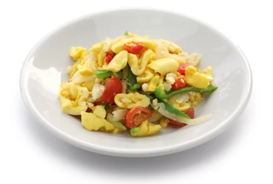
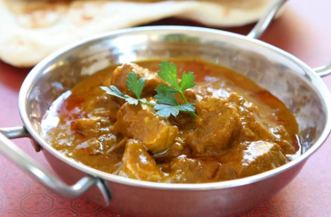
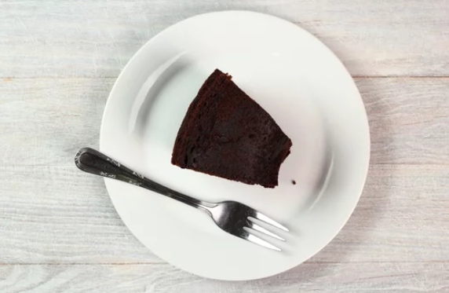

Jamaican Cuisine

Ackee and Saltfish

Curry Goat

Jamiacan Black Cake
🍽 These are just a few of the dishes that you will find locals eating on a regular basis. Make sure to try them when visting. 🍽
HOME
|
Music in Jamaica
|
Contact Us